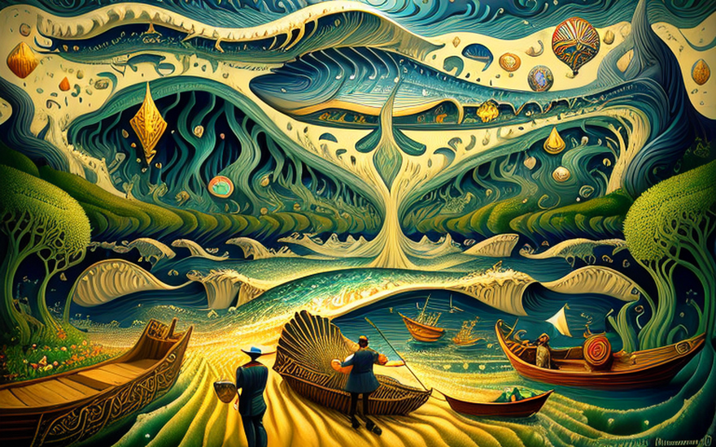
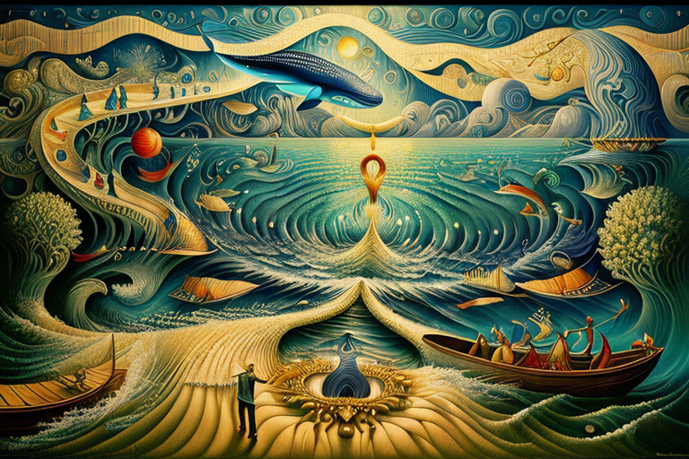
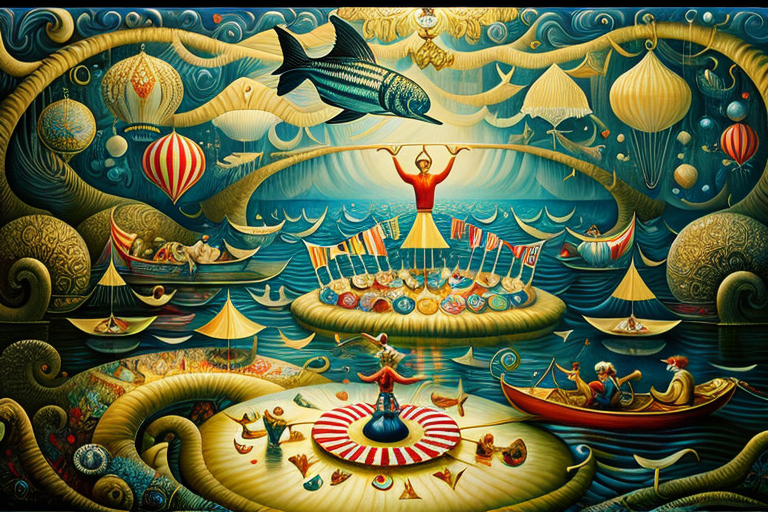

Αρχική Σελίδα
Πίνακας Περιεχομένων
Η φάλαινα και το γεύμα της απο οπτικές ίνες
H κοιλιά του κήτους

Μια φορά κι έναν καιρό ζούσε ένας ηλεκτρολόγος μηχανικός ονόματι Ιωνάς. Άνθρωπος πού κατείχε αστείρευτη μηχανολογική ικανότητα, μπορούσε να επιδιορθώσει κυκλώματα με μία κίνηση της χείρας του και να δαμάσει τα αγριότερα ηλεκτρικά θηρία με ένα μόνο νεύμα του κεφαλιού του. Αλλά δυστυχώς, η μοίρα του επιφύλασσε μια περίεργη ανατροπή.
Μια μοιραία μέρα, καθώς ο Ιωνάς δοκίμαζε την τελευταία του εφεύρεση, μια επαναστατική τοστιέρα που μπορούσε να τραγουδήσει κορώνες όπερας ενώ ψήνει ψωμί, τηλεμεταφέρθηκε ανεξήγητα στα πιο σκοτεινά βάθη του ωκεανού. Και εκεί, μέσα στην κοιλιά μιας γιγάντιας φάλαινας, στέκοταν σαστισμένος και βουτηγμένος στους δυσάρεστους χυμούς των πεπτικών σωθικών.
Ο Ιωνάς ήταν ένας πρακτικός άνθρωπος, πάντα εξοπλισμένος με το αξιόπιστο μέτρο του και μια τσέπη γεμάτη αντιστάσεις. Αλλά εδώ, στο υγρό στομάχι της φάλαινας, βρέθηκε αντιμέτωπος με ένα εντελώς διαφορετικό πρόβλημα. Πώς να περάσει την ώρα του ενώ είναι παγιδευμένος στην κοιλιά ενός κήτους; Ένα περίπλοκο αίνιγμα.
Στην προσπάθειά του να βρει παρηγοριά ανάμεσα στην πληθώρα γαστρικών υγρών και αχώνευτων καλαμαριών, ο Ιωνάς ανακάλυψε ότι δεν ήταν μόνος του εκεί μέσα. Στα αιωρούμενα συντρίμμια και τα μισοχωνεμένα χταπόδια, συνάντησε μια περίεργη ποικιλία περιπλανώμενων που είχαν πέσει θύματα των ιδιοτροπιών της υδρόβιας μοίρας.
Πρώτον, βρήκε τον Μελφίνιο τον μίμο, έναν σιωπηλό τροβαδούρο, μιμούταν την τύχη του του μετά ατελείωτων παραστάσεων, ελπίζοντας ότι μια μέρα η φάλαινα θα κουραζόταν από τα σιωπηλά θεατρικά του και θα τον ξερνούσε ξανά πίσω στο βασίλειο των ζωντανών.
Μετά ήταν η Εθέλια η εκκεντρική, μια επιδεικτική μάντισσα που είχε προβλέψει την κακή της μοίρα, αλλά απέτυχε να ακολουθήσει τις ίδιες της τις συμβουλές. Γέμιζε τη ζοφερή ατμόσφαιρα με τις δραματικές προφητείες και μυστικιστικές χειρονομίες, προς μεγάλη απογοήτευση των συντρόφων της.
Και ας μην ξεχνάμε το δίδυμο του Πολύβιου του βοτανιστή και της Χορτέσιας της αρπίστριας, που έπεσαν ο ένας πάνω στον άλλον ανάμεσα στα γλοιώδη εντόσθια της φάλαινας. Ο Πολύβιος, με το πάθος του για τη βοτανική, είχε καταφέρει να καλλιεργήσει έναν μικρό κήπο από φύκια και φωτοσυνθετικούς οργανισμούς εν μέσω της πλωτής φυλακής τους, ενώ η Χορτέσια μαδούσε την άρπα της σε μια προσπάθεια να πνίξει τα γουργούρισματα του πεπτικού συστήματος της φάλαινας.
Ο Ιωνάς, όντας η πρακτική ψυχή που ήταν, αξιολόγησε την κατάσταση με ανασηκωμένο το φρύδι και έναν στεναγμό απογοήτευσης. “Λοιπόν, φίλοι μου”, είπε, κρατώντας ψηλά ένα κολλητήρι μετάλλων σαν να ήταν σκήπτρο, “για να περάσουμε τους ατελείωτους μήνες που θα είμαστε παγιδευμένοι μέσα σε αυτό το υδρόβιο θηρίο, πρέπει να βρούμε έναν τρόπο να βάλουμε τάξη σε αυτή τη χαοτική κατάσταση.”
Και έτσι, με το αξιόπιστο μέτρό του στο χέρι, ο Ιωνάς ξεκίνησε να μεταμορφώνει το θλιβερό περιβάλλον τους σε ένα αυτοσχέδιο εργαστήριο. Συνέδεσε καλώδια και διακόπτες που είχαν διασωθεί από λείψανα προηγούμενων επιβαίνοντων, μια λάμπα να τρεμοπαίζει εδώ, μια υδροηλεκτρική γεννήτρια εκεί, για να δημιουργήσει μια αίσθηση πολιτισμού μέσα στην κοιλιά της φάλαινας.
Ο Μελφίνιος ο μίμος πήρε τον ρόλο του ελεγκτή κυκλωμάτων, χρησιμοποιώντας τις σιωπηλές του χειρονομίες για να δείξει εάν τα μηχανήματα λειτουργούσαν ή αν χρειαζόταν μια γρήγορη κλωτσιά. Η Εθέλια η εκκεντρική, με το έμφυτο χάρισμά της για δράμα, ανέλαβε το ρόλο της επίσημης χρονομέτρησης, απαγγέλλοντας τα λεπτά και τις ώρες που διαρκεί μια φωνή για να διασχίσει τα υδάτινα βάθη.
Ο Πολύβιος, ο βοτανιστής με τους πράσινους αντίχειρες, επινόησε ένα σύστημα ώστε να καλλιεργήσει τη δική του τροφή μέσα στο στομάχι της φάλαινας, δημιουργώντας ένα μικροσκοπικό οικοσύστημα που τους συντηρούσε όλους. Η Χορτέσια η αρπίστρια δάνεισε τα μουσικά της χαρίσματα στον σκοπό, συνθέτοντας ιδιότροπες συμφωνίες που αντηχούσαν μέσα στους τοίχους της περίργης κατοικίας τους.
Ενσύρματη φάλαινα

Καθώς ο Ιωνάς, ο πολυμήχανος μηχανικός, ερευνούσε το αυτοσχέδιο εργαστήριό τους με ένα μείγμα υπερηφάνειας και αναστάτωσης, ένα περίεργο βουητό ακούσθηκε μέσα στο σπηλαιώδες στομάχι της φάλαινας. Ένας πρωτάκουστος ήχος, μια κακοφωνία από κρότους αντηχούσαν στους σαρκώδεις τοίχους.
Η πηγή αυτής της αναταραχής έγινε σύντομα εμφανής καθώς η φάλαινα, οδηγούμενη από μια ακόρεστη όρεξη, καταβρόχθισε μια τεράστια ποσότητα καλωδίων οπτικών ινών που ήταν συνδεδεμένα στον πυθμένα του ωκεανού. Αυτά τα καλώδια, προορίζονταν να παρέχουν σύνδεση στο διαδίκτυο στα πιο μακρινά σημεία του κόσμου, και κατέληξαν ως ένα απροσδόκητο γεύμα για το αχόρταγο κήτος.
Ο Ιωνάς, με την ζωηρή περιέργειά του, απέσπασε με ζήλο ένα καλωδίο ινών από το πεπτικά ζουμιά της φάλαινας. Καθώς το επιθεωρούσε, ένα άτακτο χαμόγελο πέρασε στο πρόσωπό του. “Φίλοι μου”, αναφώνησε, κρατώντας το καλώδιο ινών ψηλά, “φαίνεται ότι η κακιά μας μοίρα μόλις πήρε μια πολύ ενδιαφέρουσα τροπή. Πέσαμε πάνω στην ίδια την ουσία της συνδεσιμότητας μέσα στα έγκατα αυτού του θηρίου!”
Οι σύντροφοί του, ο Μελφίνιος, η Εθέλια, ο Πολύβιος και η Χορτέσια, τον κοίταξαν με ένα μείγμα σύγχυσης και προσμονής. Πώς θα μπορούσε το διαδίκτυο να υπάρχει μέσα στα όρια του στομάχου μιας φάλαινας; Και τι σκοπό θα μπορούσε να εξυπηρετήσει στην καθημερινότητά τους;
Ο Ιωνάς, με μία χαρακτηριστική λάμψη στα μάτια, άρχισε να εξηγεί. “Βλέπετε, αγαπητοί φίλοι, αυτές οι οπτικές ίνες φέρουν τη δύναμη της επικοινωνίας. Συνδέοντάς τις με τα αυτοσχέδια μηχανήματα και τα όργανά μας, μπορούμε να αξιοποιήσουμε την άπλετη προσφορά γνώσης, ιδεών και ψυχαγωγίας που έχει να προσφέρει το Διαδίκτυο!”
Οι άλλοι μαζεύτηκαν τριγύρω, με τα μάτια τους ανοιχτά από απορία και σύγχυση. Ο Μελφίνιος ο μίμος, για πάντα παγιδευμένος σε μια σιωπηλή παντομίμα, δημιούργησε φανταστικές εικόνες ενός κόσμου που συνδέεται με αόρατα νήματα. Η Εθέλια η εκκεντρική, με ένα δραματικό χάρισμα απτόητο από τις περιστάσεις τους, προφήτευσε ένα μέλλον όπου οι πληροφορίες ρέουν ελεύθερα, ακόμη και μέσα στην κοιλιά μιας φάλαινας.
Ο Πολύβιος, ο έξυπνος βοτανολόγος, βρήκε έναν τρόπο να συγχωνεύσει το οικοσύστημα φυκιών και φωτοσυνθετικού πλακτόνιου με τα καλώδια ινών, δημιουργώντας μια συμβιωτική σχέση όπου οι πληροφορίες και η τροφή αλληλεπιδρούν.
Η Χορτέσια, με τα δάχτυλά της να ανυπομονούν να γρατζουνίσουν τις χορδές της άρπας της, χαμογέλασε στη σκέψη αυτή. “Και η μουσική! Ω, οι μελωδίες και οι αρμονίες που θα ανακαλύψουμε! Μπορούμε να μοιραστούμε τις συνθέσεις μας, να συνεργαστούμε με μουσικούς μακριά και να μελωδήσουμε τον κόσμο μέσα από την κοιλιά αυτού του κήτους!”
Και έτσι, καταχάρηκαν όλοι με αυτό το απροσδόκητο δώρο από την πεινασμένη φάλαινα. Ο Ιωνάς, με την τεχνογνωσία του στα ηλεκτρολογικά, εργάστηκε ακούραστα για να δημιουργήσει έναν αυτοσχέδιο κόμβο διαδικτύου χρησιμοποιώντας διασωθέντα κυκλώματα και τα εντερικά αέρια της φάλαινας ως πηγή ενέργειας. Οι οπτικές ίνες συναρμολογήθηκαν προσεκτικά και συνδέθηκαν με τα μηχανήματα τους, επιτρέποντάς τους να αποκτήσουν πρόσβαση στις αχανείς πληροφορίες του ψηφιακού κόσμου.
Μέσα στην κοιλιά της φάλαινας, ακολούθησε μια πολυφωνία δραστηριότητας. Ο Μελφίνιος, ο σιωπηλός ελεγκτής κυκλωμάτων, επιβεβαίωσε τις συνδέσεις με αόρατες χειρονομίες, ενώ η Εθέλια, η εκκεντρική μάντισσα, διακήρυττε την άφιξη κάθε πακέτου δεδομένων με μεγαλειώδεις προφητείες. Ο βοτανικός κήπος του Πολύβιου άκμασε με νέες γνώσεις, με τη βοήθεια διαδικτυακών επιστημονικών μελετών, και η άρπα της Χορτέσιας έπαιζε μελωδίες εμπνευσμένες από μουσικές συνθέσεις που συνετέθηκαν αιώνες πριν.
Από θαλάσσιες διώξεις σε χορδές

Και έτσι η κοιλιά της φάλαινας, γεμάτη με το αυτοσχέδιο εργαστήριο και μια γρήγορη σύνδεση στο διαδίκτυο, έφτασε στα αυτιά του τρομερού βαρρακούδιου. Το βαρρακούδιο, μια ενσάρκωση της οργής των ψαριών, περιπολούσε στα βάθη με ανυποχώρητη αποφασιστικότητα. Το μακρουλό, ασημένιο σώμα του διέσχιζε το νερό με αστραπιαία ταχύτητα, και τα κοφτερά δόντια του ήταν πάντοτε έτοιμα να υπερασπιστούν την πολύτιμη επικράτειά του.
Οι φάλαινες, με την ακόρεστη όρεξή τους και αδιαφορία για όποιες συνέπειες, συχνά υπέκυπταν στη δελεαστική πανδαισία των οπτικών ινών που βρισκόταν κάτω από τα κύματα. Αλλά τώρα, με τον βαρρακούδιο ως αδυσώπητο διώκτη τους, οι μέρες τους ήταν μετρημένες.
Μόνο στο άκουσμα της ιστορίας της φάλαινας που μετετράπη σε εργαστήριο, τα μάτια του βαρρακούδιου έλαμψαν τόσο από περιέργεια όσο και από οργή. Πώς τολμούν αυτά τα πλάσματα, αυτοί οι αιχμάλωτοι του μεγάλου κήτους, να τολμούν να ανασυνδέουν τα καλώδια που φύλαγε τόσο ενδελεχώς; Δεν άντεχε τέτοια αυθάδεια!
Με μια κίνηση της ισχυρής ουράς του, το βαρρακούδιο ξεκίνησε μια αδυσώπητη καταδίωξη. Έπλεε μέσα στην ανοιχτή θάλασσα, με τα αιχμηρά του δόντια να γυαλίζουν στο φως του ήλιου, καθώς αισθανόταν τους αμυδρούς κραδασμούς των οπτικών ινών. Η καταδίωξη ήταν σε εξέλιξη και καμία φάλαινα, όσο τεράστια κι αν ήταν, δεν μπορούσε να αποφύγει την οργή του βαρρακούδιου.
Η φάλαινα, αγνοώντας τον κίνδυνο που πλησίαζε, συνέχιζε το ταξίδι της στα βάθη του ωκεανού, ενώ το βαρρακούδιο ακολουθούσε τα χνάρια της. Εν τω μεταξύ, μέσα στην κοιλιά του, ο Ιωνάς και οι σύντροφοί του απολάμβαναν τη νέα σύνδεσή τους με τον έξω κόσμο. Αντάλλασαν μηνύματα με μακρινούς φίλους, εξερευνούσαν την τεράστια έκταση της γνώσης και παρακολουθούσαν ακόμη και ζωντανές μεταδόσεις παραστάσεων.
Αλλά καθώς το βαρρακούδιο πλησίαζε, η ειρηνική πλεύση της φάλαινας διεταράχθη. Η αγριότητα και η αποφασιστικότητα του βαρρακούδιου τρόμαξαν την φάλαινα μέχρι θανάτου. Κολύμπησε πιο γρήγορα, προσπαθώντας απεγνωσμένα να αποφύγει τον γρήγορο κυνηγό, αλλά το βαρρακούδιο ήταν αμείλικτο στην καταδίωξή του.
Η καταδίωξη, τους οδήγησε σε ένα συγκρότημα μικρών νησιών, όπου δοκιμάστηκε η ευκινησία του βαρρακούδιου. Κολυμπούσε ανάμεσα στα βραχώδη εξογκώματα και έκανε γρήγορους ελιγμούς ανάμεσα σε ύπουλα ρεύματα, χωρίς ποτέ να αφήσει τη φάλαινα να φύγει πολύ μπροστά. Τα νησιά έτρεμαν από τη δύναμη των κινήσεών τους και οι θάλασσες αναδεύοταν με τον ταραχώδη αγώνα τους.
Εν τω μεταξύ, ο Ιωνάς και οι σύντροφοί του, παγιδευμένοι στη χαοτική δίνη, κράδαιναν τα μηχανήματα και τα όργανά τους για να παραμείνουν σταθεροί. Το αυτοσχέδιο εργαστήριό τους έτρεμε και σείζοταν, αλλά παρέμειναν σταθεροί στην αποφασιστικότητά τους να διατηρήσουν την διαδικτυακή σύνδεσή τους.
Καθώς η μάχη συνεχιζόταν, έγινε σαφές ότι η φάλαινα, επιβαρυμένη από το τεράστιο μέγεθός της, αδυνατούσε να ξεφυγει για πάντα απο το βαρρακούδιο. Η ακατάπαυστη καταδίωξη του βαρρακούδιου εξαντλούσε το γιγάντιο κήτος, με αποτέλεσμα να καθυστερεί και να παραπαίει. Το τέλος φαινόταν αναπόφευκτο.
Ο Ιωνάς, ο πρακτικός ηλεκτρολόγος μηχανικός, συλλογίστηκε την κατάσταση. “Φίλοι μου, φαίνεται ότι έχουμε εμπλακεί άθελά μας σε μια μάχη για τον έλεγχο αυτών των οπτικών ινών. Ενώ απολαμβάνουμε τα θαύματα του διαδικτύου, οι φάλαινες παρασύρονται από τη γαστρονομική του γοητεία και το βαρρακούδιο τις υπερασπίζεται με ασυναγώνιστη επιμονή.”
Ο Μελφίνιος, ο σιωπηλός τροβαδούρος, χειρονομούσε μανιωδώς, καταδείχνοντας ότι η ασφάλεια του καταφυγίου τους θα μπορούσε σύντομα να διακυβευθεί. Η Εθέλια, η εκκεντρική μάντισσα, είδε οράματα αναταραχής και χάους. Ο Πολύβιος, ο βοτανολόγος με τον πράσινο αντίχειρα, ανησυχούσε για την ασφάλεια του υποβρύχιου κήπου τους, γαλουχημένος από την αφθονία της γνώσης που είχαν αποκτήσει. Και η Χορτέσια, η αρπίστρια, φοβόταν την απώλεια της μελωδικής τους σχέσης με τον έξω κόσμο.
Αποφασισμένοι να δράσουν γρήγορα, επινόησαν ένα σχέδιο, για να μεσολαβήσουν στη σύγκρουση, και να σώσουν τους εαυτούς τους. Θα γίνονταν πρεσβευτές της ειρήνης, επιδιώκοντας να μεσολαβήσουν σε μια εκεχειρία μεταξύ των βαρρακούδιων και των φαλαινών και να διατηρήσουν τη λεπτή ισορροπία της υποβρύχιας ύπαρξής τους.
Οπλισμένοι με τα μοναδικά τους ταλέντα και τον παράξενο κόσμο που είχαν δημιουργήσει μέσα στην κοιλιά της φάλαινας, ξεκίνησαν μια αποστολή διπλωματίας. Ο Μελφίνιος, ο σιωπηλός μίμος, επινόησε μια βουβή παράσταση για να μαγεύσει τόσο το βαρρακούδιο όσο και τις φάλαινες, αναδύοντας συναισθήματα ενότητας και κατανόησης. Η Εθέλια, η δραματική μάντισσα, προφήτευσε ένα μέλλον στο οποίο η αρμονία επικρατούσε στο χάος, παρασύροντας τις δύο αντιμόμενες πλευρές με τη γοητεία μιας ειρηνικής συνύπαρξης.
Ο Πολύβιος παρουσίασε στο βαρρακούδιο μια πανδαισία γνώσης, μοιράζοντας τα θαύματα του βοτανικού κόσμου, ενώ η Χορτέσια έπαιζε την άρπα της, μαγεύοντας τα ψάρια με μελωδίες που αντηχούσαν στα υποβρύχια βάθη, προκαλώντας μια αίσθηση ηρεμίας και κοινού σκοπού.
Αποτρέπωντας την καταστροφή

Μπροστά στην επικείμενη καταστροφή, οι ήρωές μας αρνήθηκαν να παραδοθούν στο γρήγορο και αδυσώπητο βαρρακούδιο. Με τη γρήγορη σκέψη και την επινοητικότητα τους, επινόησαν ένα τολμηρό σχέδιο για να ξεγελάσουν τον διώκτη τους και να ξεφύγουν από τα αιχμηρά σαγόνια του.
Η Χορτέσια, η αρπιστίστρια με τα ευκίνητα δάχτυλά, έκατσε στην κορφή της τεράστιας καμπούρας της φάλαινας, με τα δάχτυλά της έτοιμα να μελωδήσουν τις χορδές του οργάνου της. Ήξερε ότι η μουσική είχε τη δύναμη να διαμορφώνει αντιλήψεις και να πυροδοτεί τη φαντασία. Με την άρπα της ψηλά, άρχισε να παίζει μια ζωντανή μελωδία που αντηχούσε μέσα στη θάλασσα, κουβαλώντας τις νότες της ευθυμίας και της χαράς, μεταμφιέζοντας την κοιλιά της φάλαινας που βροντούσε σε ένα πλωτό πλοίο τσίρκο.
Το βαρρακούδιο, πάντα σε εγρήγορση για το θήραμά του, αιφνιδιάστηκε από την ξαφνική μεταμόρφωση. Αντί για την τεράστια φάλαινα που κατεδίωκε ανελέητα, έβλεπε τώρα ένα υπέροχο σκάφος στολισμένο με πολύχρωμα πανιά και στολισμένο με ακροβάτες και γελωτοποιούς. Η αγριότητα του βαρρακούδιου έδωσε τη θέση του στη σύγχυση, καθώς δίσταζε, αβέβαιο για την επόμενη κίνησή του.
Εν τω μεταξύ, ο Μελφίνιος, ο σιωπηλός τροβαδούρος, αναδύθηκε από την κοιλιά της φάλαινας, μιμούμενος τη μεγαλειώδη παράσταση ενός αρχηγού του τσίρκου. Με χειρονομίες ακριβείας, έστρεψε την προσοχή του βαρρακούδιου μακριά από τη φάλαινα, προσκαλώντας το να παρακολουθήσει την πιο εντυπωσιακή παράσταση υδάτινων ακροβατικών που έχει δει ποτέ.
Ο Πολύβιος, η βοτανολόγος, εμφανίστηκε με μια αυτοσχέδια τρίαινα φτιαγμένη από φύκια και πράσινο πλακτόνιο, ενώ η Εθέλια, η εκκεντρική μάντισσα, βοήθησε στην ψευδαίσθηση αυτή, με δραματικές προφητείες και ευφάνταστες ιστορίες για μυθικά θαλάσσια πλάσματα και βυθισμένους θησαυρούς.
Ο Ιωνάς, ο πρακτικός μηχανικός, χρησιμοποίησε την πείρα του για να χειραγωγήσει το περιβάλλον της φάλαινας. Με μια κίνηση του χεριού του, ενεργοποίησε μια σειρά από μηχανισμούς μέσα στην κοιλιά της φάλαινας. Τα μηχανήματα παρήγαγαν πίδακες νερού που ώθησαν τη φάλαινα προς τα εμπρός, μιμούμενοι την κίνηση ενός πραγματικού σκάφους. Επίσης, ο Ιωνάς χρησιμοποιώντας το αξιόπιστο μέτρο του και μια χούφτα αντιστάσεις, δημιούργησε μια υπνωτική εκτροπή φώτων και ήχων. Τα ελατήρια κροτούσαν και χόρευαν μέσα στην κοιλιά της φάλαινας, ενισχύοντας περαιτέρω την ψευδαίσθηση μιας πολύβουης παράστασης τσίρκου. Η ψευδαίσθηση ήταν πλήρης.
Καθώς η φάλαινα τσίρκο χόρευε και στριφογύριζε μέσα στα κύματα, η αντίληψη του βαρρακούδιου αιχμαλωτίστηκε από το θέαμα. Η αδυσώπητη καταδίωξή του ξεχάστηκε καθώς θαύμαζε την καλλιτεχνική αυτή παράσταση που εκτυλίσσοταν μπροστά στα μάτια του.
Από τη θάλασσα στην οθόνη

Στη μέση της απέραντης θάλασσας, που περιβάλλεται από νερό και τον περιστασιακά γλάρο, το πλωτό θέαμα του τσίρκου που δημιούργησαν οι πολυμήχανοι ήρωές μας είχε ένα μικρό πρόβλημα. Του έλειπε κοινό. Τις μεγαλειώδεις ερμηνείες και τις ιδιότροπες επιδείξεις τις έβλεπαν μόνο το βαρρακούδιο και τα ψάρια που κολυμπούσαν εκεί κοντά.
Ο Ιωνάς, ο πρακτικός μηχανικός με χάρισμα στην καινοτομία, σκέπτοταν αυτή τη δύσκολη θέση με τεταμένη προσοχή. Δεν ήταν από αυτούς που τον πτοούσαν τέτοιες προκλήσεις, γιατί έβλεπε ευκαιρίες εκεί που οι άλλοι έβλεπαν εμπόδια. Με μια λάμψη στα μάτια του, σκαρφίστηκε ένα σχέδιο που θα μετέφερε το θέαμα τους και στις πιο μακρινές περιοχές του κόσμου.
Χρησιμοποιώντας τις οπτικές ίνες που ανακτήθηκαν από την κοιλιά της φάλαινας, ο Ιωνάς ξεκίνησε ένα μεγαλεπήβολο έργο. Συνέδεσε σχολαστικά τις ίνες με μια σειρά συσκευών, δημιουργώντας ένα αυτοσχέδιο σύστημα μετάδοσης. Μέσω αυτής της έξυπνης κατασκευής, θα έκανε ζωντανή μετάδοση των εξαιρετικών ερμηνειών τους σε θεατές απ’ όλο τον κόσμο.
Οι ιδιότροπες μελωδίες της άρπας της Χορτέσιας γέμιζαν τον αέρα και οι ακροβάτες θάμπωναν με τις πράξεις τους οι οποίες φαινομενικά αψηφούσαν τη βαρύτητα, συσκευές του Ιωνά δούλευαν ασταμάτητα. Οι οπτικές ίνες, πάλλοταν από δεδομένα, και μετέφεραν το ζωντανό θέαμα και τους ήχους του τσίρκου μέσα από το τεράστιο δίκτυο των καλωδίων, στον κόσμο πέρα από τη θάλασσα.
Μακρινά εδάφη, όπου η ιδέα μιας πλωτής φάλαινας τσίρκο φάνταζε σαν ένα ιδιότροπο όνειρο, ξαφνιάσθηκαν με τη μετάδοση του ζωντανού θεάματος. Ο κόσμος μαζεύτηκε γύρω από οθόνες, σε πολυσύχναστες πλατείες πόλεων μέχρι σε απομακρυσμένα χωριά, με τα μάτια τους ανοιχτά από απορία καθώς παρακολουθούσαν την εκπληκτική παράσταση να εκτυλίσσεται στη μέση του ωκεανού.
Τα νέα διαδόθηκαν αστραπιαία, γιατί αυτό ήταν ένα πρωτόγνωρο θέαμα. Από τους λόγιους της Αθήνας μέχρι τους απλούς αγρότες της υπαίθρου, όλοι γοητεύτηκαν από τις αλλόκοτες και απολαυστικές παραστάσεις των παγιδευμένων περιπλανώμενων. Γέλια και χειροκροτήματα ξέσπασαν στις πιο απρόσμενες γωνιές του κόσμου, καθώς η ζωντανή ροή μετέφερε τη μαγεία του τσίρκου στα κατώφλια τους.
Η εφεύρεση του Ιωνά έγινε πασίγνωστη, ένα θαύμα τεχνολογικής ευρηματικότητας και ανθρώπινης ιδιοφυίας. Η ζωντανή μετάδοση της πλωτής φάλαινας τσίρκο έγινε πολιτιστικό φαινόμενο, προσελκύοντας κοινό από όλα τα κοινωνικά στρώματα. Γεφύρωσε τα κενά, συνέδεσε καρδιές και φούντωσε τη συλλογική φαντασία ενός κόσμου που λαχταρούσε για τα θαύματα των εγκόσμιων.